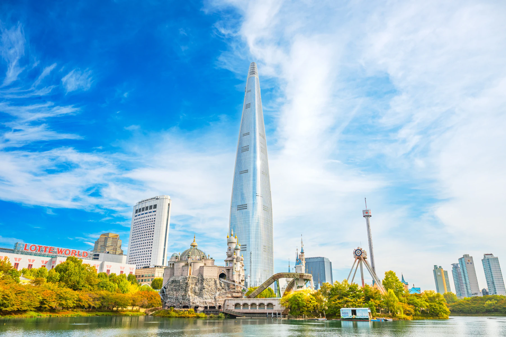
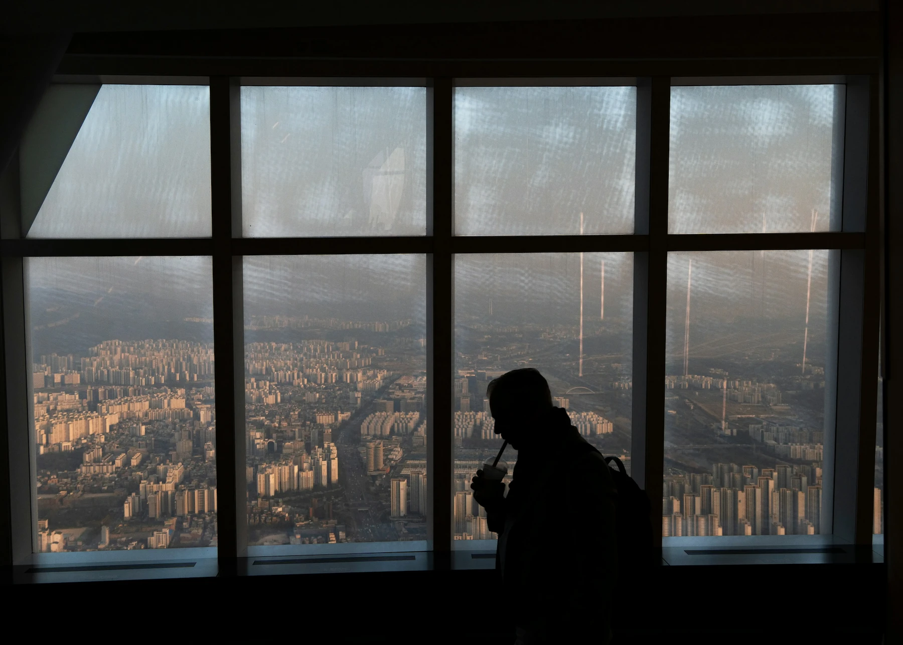
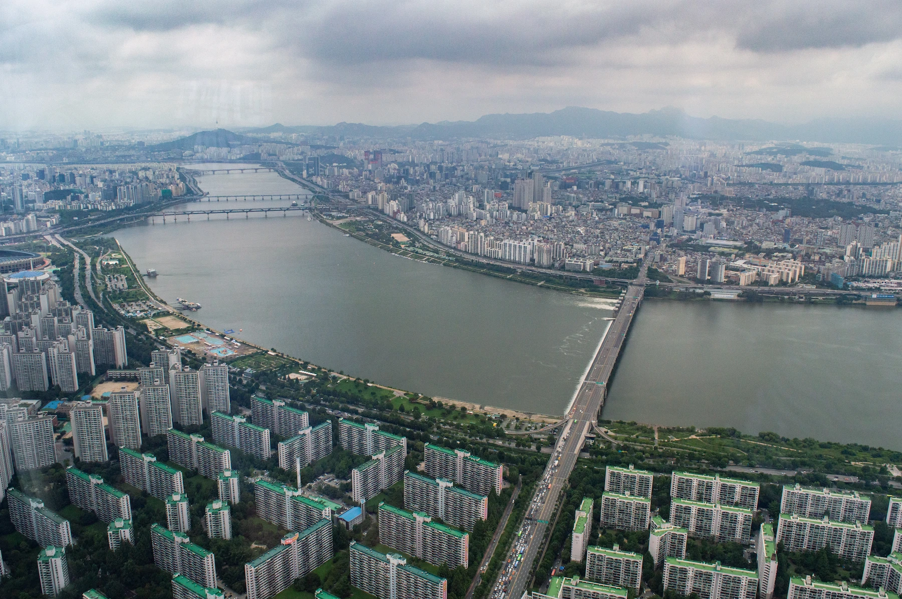
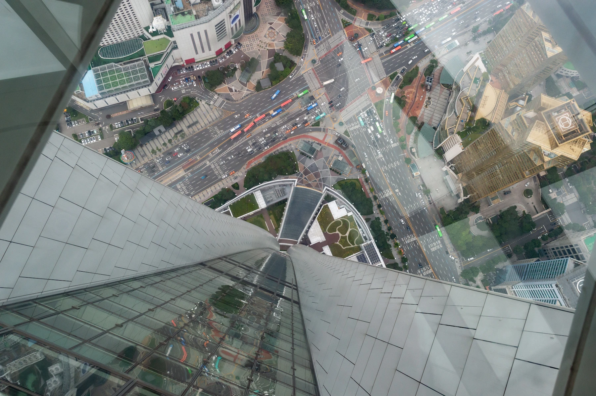
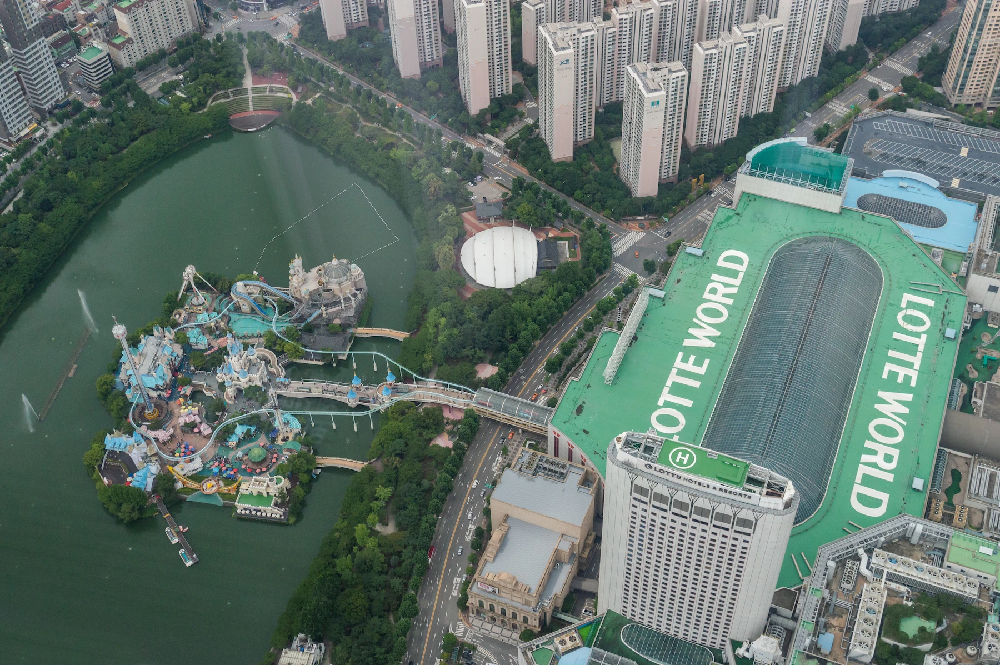

Guide de Seoul Sky 2026
Billets, horaires de visite et vue depuis Lotte World Tower

Seoul Sky est l’observatoire payant de Lotte World Tower. Pour une première visite consacrée à la vue, notre choix de départ est une entrée classique un jour de bonne visibilité.
Choisissez le coucher du soleil si vous voulez voir la ville passer du jour à la soirée. Une visite en journée par temps clair mérite aussi d’être envisagée : inutile d’organiser toute votre journée autour du coucher du soleil si la météo ou votre programme s’y prête mal.
Fast Pass est un autre choix de billet, à envisager si l’attente pose problème. Il n’améliore pas une vue brumeuse. Sky Bridge est une expérience extérieure différente : décidez d’abord si cette activité vous intéresse avant de comparer son prix à celui d’un billet ordinaire pour l’observatoire.
Seoul Sky peut être une étape d’une journée à Jamsil. Gardez du temps pour trouver l’entrée, accéder à l’observatoire, regarder autour de vous et redescendre, au lieu d’en faire un arrêt rapide entre deux réservations très rapprochées.
Seoul Sky vaut-il la visite ?
L’intérêt est de saisir l’ampleur de Séoul. Par temps clair, le fleuve et l’étendue de la ville font partie de l’expérience, au-delà du décor d’une photo. Prenez le temps d’observer plutôt que de rejoindre directement un point photo puis repartir.
C’est une raison plus solide de venir que de cocher un monument supplémentaire. Un couple qui organise sa soirée autour de la vue peut profiter davantage de la visite qu’un groupe qui la case après une longue journée au parc d’attractions.
Vous passez déjà du temps à Jamsil ? Placez l’observatoire autour d’un repas ou d’une activité voisine plus courte. Vous venez uniquement pour Seoul Sky ? Comptez le trajet depuis l’hôtel pour décider du temps à lui consacrer.

Photo : Evgeny Matveev / Unsplash
Quand renoncer à la visite
Si votre séjour à Séoul est court et qu’une vue depuis un gratte-ciel compte peu pour vous, consacrez ce temps à une activité que vous regretteriez davantage de manquer.
Soyez tout aussi lucide sur une mauvaise visibilité. Si vous payez pour voir la ville au loin, une forte brume ou des nuages bas peuvent justifier de changer de jour. Vous pouvez tout de même apprécier la hauteur et l’expérience intérieure, mais ce n’est pas la même attente qu’un panorama dégagé.
Avec des enfants, réfléchissez à la place de cette visite dans la journée. Un bref regard sur la ville peut suffire. Attendre le coucher du soleil après une journée entière de manèges demande davantage.
Quand visiter Seoul Sky : de jour, au coucher du soleil ou de nuit ?
Partez de la vue souhaitée, puis vérifiez les conditions pour votre date. Aucune heure précise ne convient toute l’année.
De jour : pour observer la ville elle-même
Choisissez la journée pour distinguer le fleuve, l’organisation de la ville et le paysage environnant. Pour cette visite, la visibilité compte plus qu’une photo à une heure à la mode.
Inutile de rester jusqu’au soir pour justifier le prix d’entrée. Une visite en journée par temps clair peut se suffire à elle-même et laisser le reste du temps pour un repas, le lac ou un autre quartier de Séoul.

Photo : Tristan Surtel / Wikimedia Commons · CC BY-SA 4.0 · image redimensionnée
Au coucher du soleil : pour le passage du jour à la nuit
Le coucher du soleil convient si vous voulez voir le paysage changer. Il faut donc arriver avant la fin du jour et rester assez longtemps pour profiter de la vue du soir.
Prévoyez d’être aux étages d’observation avant le coucher du soleil, pas seulement d’arriver alors à la station Jamsil. Avant la vue, il faut trouver l’entrée, faire contrôler le billet, l’échanger si nécessaire et passer la file d’admission.
Consultez l’heure du coucher du soleil pour votre date et calculez le temps nécessaire en remontant les étapes. Acheter en ligne ne garantit pas à lui seul d’atteindre les étages d’observation à une minute précise.
Gardez assez de souplesse avant votre réservation suivante. Un dîner réservé juste après peut vous obliger à choisir entre la vue du soir et une arrivée à l’heure.
De nuit : pour les lumières, sans attendre le coucher du soleil
Une visite le soir convient si vous êtes occupé ailleurs en journée et souhaitez surtout voir la ville illuminée. Inutile d’arriver de jour uniquement parce que d’autres préfèrent les deux ambiances.
Attendez-vous à une expérience différente de la vue diurne. Choisissez la nuit pour les lumières, pas pour retrouver les mêmes détails du paysage après la tombée du jour.
Vérifiez l’heure limite d’entrée à votre date, ainsi que l’heure de fermeture. Gardez assez de temps pour profiter de la vue avant de redescendre.
Nuages, brume et pluie : faut-il changer de programme ?
Le cadre intérieur de Seoul Sky ne garantit pas une vue dégagée. La pluie, les nuages bas et la brume peuvent modifier ce que vous voyez, même si l’observatoire accueille les visiteurs.
Si vous venez pour la vue, vérifiez les conditions du moment avant d’acheter un billet non modifiable. Considérez ensemble nuages, brume et pluie : un seul indicateur favorable de météo ou de qualité de l’air ne promet pas un panorama dégagé.
Une prévision de pluie ne doit pas nécessairement faire annuler le projet. Demandez-vous si vous apprécieriez encore la visite avec une vue lointaine limitée. Si la réponse est non et qu’un autre jour est possible, reporter la visite est raisonnable.
Choisissez un billet compatible avec cette souplesse
Un programme souple n’est utile que si le billet autorise le changement envisagé.
Avant de payer, vérifiez si le billet est valable un jour précis ou sur une période donnée. Vérifiez ensuite séparément les conditions d’annulation et de changement de date. Une validité plus longue ne signifie pas forcément que le billet est remboursable.
Si vous avez déjà réservé, lisez les conditions avant de renoncer à la visite ou d’acheter un autre billet. Une mauvaise visibilité ne donne pas automatiquement droit à un remboursement.
Fast Pass répond à une autre question : quelle attente acceptez-vous ? Décidez si la vue du jour mérite la visite avant de payer un supplément pour l’accès prioritaire.
Combien de temps prévoir ?
Pour une visite classique de l’observatoire, nous conseillons de prévoir environ 90 à 120 minutes, plus les trajets et les éventuelles longues files. C’est un repère pour organiser votre programme, pas une durée officielle de visite ni une garantie sur l’heure de sortie.
Voir le jour devenir nuit demande le temps de cette transition. Un repas ou une réservation Sky Bridge nécessite aussi son propre créneau. Ne faites pas tout entrer dans les mêmes deux heures en supposant que le reste sera rapide.
Pensez à toute la séquence : rejoindre l’entrée, régler la question du billet, monter, regarder autour de vous et redescendre. Le seul temps d’ascenseur dit peu du créneau à laisser entre votre arrivée et votre prochain rendez-vous.
Vous avez choisi le jour ? Comparez les entrées proposées, puis vérifiez la date de validité et les conditions d’annulation.
Quel billet Seoul Sky choisir ?
Pour une visite centrée sur la vue, l’entrée classique est notre recommandation de départ. Envisagez Fast Pass si la file d’admission risque de perturber vos projets. Sky Bridge est une expérience extérieure distincte : choisissez-la parce qu’elle vous intéresse, sans la considérer comme le niveau supérieur d’un billet ordinaire.
Entrée classique : le point de départ pour une visite ordinaire de l’observatoire
Un billet classique est le choix simple pour regarder autour de vous, faire des photos et profiter de la vue. Une formule supérieure n’est pas nécessaire uniquement parce que c’est votre seule visite à Seoul Sky.
Lors de la comparaison des prix, assurez-vous que l’offre indique Seoul Sky, et pas seulement Lotte World. Le parc d’attractions, l’observatoire et l’aquarium sont différents. Un billet pour l’un ne donne pas accès aux autres, sauf inclusion explicite dans la formule.
Fast Pass : évaluer ce qu’une longue attente vous coûterait
Fast Pass est un billet d’entrée avec accès prioritaire. N’achetez pas automatiquement une entrée classique puis Fast Pass comme s’il devait s’agir d’un supplément. Vérifiez ce qui est inclus avant de payer deux fois l’accès à l’observatoire.
Nous l’envisagerions si votre horaire de visite est fixe ou si quelqu’un dans le groupe supporterait mal une longue attente. Avec un après-midi souple, le supplément est plus difficile à justifier sans connaître l’affluence probable à l’entrée. En famille, comparez le total pour toutes les personnes concernées, pas seulement la différence pour un adulte.
Lisez ce que couvre l’avantage prioritaire. Ne supposez pas qu’il supprime toutes les files pendant la visite ou garantit la minute exacte d’arrivée aux étages d’observation. Gardez une marge avant la réservation suivante, même avec une entrée prioritaire.
Sky Bridge et les billets combinés
Sky Bridge est une visite extérieure réservée séparément, avec ses propres conditions de participation. Avant d’acheter un billet supplémentaire pour l’observatoire, vérifiez quelle entrée est incluse dans la visite envisagée.
Une formule avec l’aquarium mérite comparaison si les deux attractions sont déjà prévues. Vérifiez la date de validité de chaque entrée et l’éventuel ordre de visite imposé. N’ajoutez pas une attraction qui ne vous intéressait pas uniquement pour utiliser une réduction.
Un billet QR n’est pas un Fast Pass
Un code QR indique comment se présente le billet ou le bon d’échange. Il ne dit pas à lui seul quelle file vous pouvez éviter.
Avec un billet à entrée directe, les consignes peuvent permettre de présenter le code QR à l’entrée sans passer au guichet. Un bon à échanger doit d’abord être présenté au guichet, même s’il comporte aussi un code QR. Les deux formats figurent parmi les offres Seoul Sky.
Aucun format ne prouve à lui seul un accès prioritaire. Cherchez Fast Pass ou un avantage explicite d’entrée prioritaire dans l’option choisie, plutôt que de vous fier à une photo de code QR ou à un titre générique « coupe-file ».
Avant de rejoindre une file, ouvrez les consignes d’utilisation de votre réservation. Montrer le bon au personnel est plus utile que de montrer uniquement le reçu de paiement. Gardez aussi à portée de main toute pièce d’identité demandée par le vendeur.
Acheter en ligne : vérifier quand le billet est réellement utilisable
L’achat en ligne peut éviter le guichet, mais seulement si l’offre choisie permet l’entrée directe. Délai de confirmation, validité et annulation sont des conditions distinctes : l’achat en ligne ne les rend pas toutes souples.
Vous venez aujourd’hui ? Vérifiez d’abord la confirmation
Certaines offres Seoul Sky prévoient une confirmation immédiate ; d’autres peuvent prendre jusqu’à 24 heures pour confirmer et émettre le bon. Cette différence compte si vous êtes déjà à Jamsil ou espérez venir au coucher du soleil.
Pour une visite le jour même, assurez-vous que le billet peut être confirmé et utilisé à temps. Un courriel de confirmation de commande n’est pas forcément le bon d’entrée. Attendez le billet utilisable et lisez les éventuelles consignes d’échange avant de considérer votre réservation prête pour l’accès.
Vérifiez ce que signifie la date sélectionnée
Un billet valable le jour indiqué diffère d’un billet valable jusqu’à une date donnée. Lisez le libellé de l’option exacte achetée : la seule sélection d’un jour dans un calendrier n’explique pas ses règles.
De même, une période d’utilisation plus longue ne signifie pas une annulation gratuite. Confirmez la dernière date utilisable, les conditions de changement de date et la politique de remboursement avant de compter sur ce billet pour un programme dépendant de la météo.
Vérifiez aussi à qui l’offre s’adresse. Certains produits à tarif réduit sont réservés aux visiteurs étrangers et le vendeur peut demander un passeport. Un prix affiché plus bas n’est pertinent que si toutes les personnes de la réservation remplissent les conditions.
Comparez le billet utilisable, pas seulement le prix affiché
Une fois que deux options donnent le même accès, comparez le montant total pour le groupe avec les conditions de confirmation et d’utilisation. Une petite économie ne vaut pas forcément la peine si l’option moins chère impose un échange au guichet ou ne peut pas être émise à temps.
Le billet le plus souple n’est pas nécessaire pour chaque voyage. Il vous faut des conditions que vous pouvez réellement respecter.
Toutes les dates semblent complètes en ligne : que faire ?
N’abandonnez pas immédiatement la visite et ne supposez pas non plus que la page de réservation se trompe. Des voyageurs ont signalé des calendriers sans disponibilité sur plusieurs dates, puis un achat réussi sur place. Ces témoignages ne garantissent pas de billets pour votre date.
Vérifiez d’abord le produit sélectionné. L’entrée classique, Fast Pass et une visite Sky Bridge à horaire fixe sont des réservations différentes. Une option indisponible ne prouve pas que toutes les façons de visiter sont complètes.
Vérifiez ensuite si votre date se situe dans la période de réservation affichée. Si le message persiste pour toutes les dates essayées, contactez Seoul Sky ou le vendeur avant de faire spécialement le déplacement. Précisez le type de billet et le jour souhaités.
L’offre d’un autre vendeur n’est une alternative que si l’option choisie est disponible, valable pour votre visite et permet d’obtenir le billet à temps. Évitez une formule supérieure dont vous ne voulez pas simplement parce qu’elle semble disponible en premier.
Vous êtes déjà à Jamsil ? Renseignez-vous au guichet Seoul Sky avant de supposer que les disponibilités en ligne disent tout. Gardez le reste de la journée souple jusqu’à confirmation de l’entrée.
Trouver l’entrée de Seoul Sky
Dirigez-vous vers SEOUL SKY au niveau B1 de l’ensemble Lotte World Tower/Mall, au 300 Olympic-ro. Trouver la tour n’est que la première étape : il faut encore rejoindre l’entrée de l’observatoire.
À la station Jamsil, suivez les panneaux vers la tour et le centre commercial, puis cherchez précisément SEOUL SKY. Lotte World Adventure est le parc d’attractions : son entrée n’est pas le lieu où utiliser un billet ordinaire Seoul Sky. Gardez le nom coréen, 서울스카이, sur votre téléphone pour le montrer si vous demandez votre chemin.
Le bureau d’information est à côté de la billetterie, dans le hall B1. Si vous ne savez pas où utiliser votre réservation, montrez le billet et ses consignes au personnel avant de faire la queue. Demandez aussi un guide des niveaux ici, plutôt que de vous orienter avec une ancienne capture d’écran.
Que se passe-t-il à l’arrivée ?
Effectuez d’abord l’échange éventuel du billet, puis suivez le parcours d’entrée indiqué par le personnel. Gardez le billet utilisable à portée de main jusqu’au passage des contrôles concernés.
Les expositions et les contenus multimédias font partie de la visite, et l’ascenseur Sky Shuttle utilise des écrans pendant la montée. Ce trajet présente l’observatoire ; il ne comprend pas le temps nécessaire pour rejoindre l’entrée, accéder aux lieux et circuler dans les espaces d’observation.
Une fois en haut, regardez d’abord la ville avant de chercher une photo vue en ligne. Nous prendrions d’abord le temps du panorama, puis déciderions de la place à donner au sol vitré, à une étape extérieure ou aux repas et boissons.
Pour repartir, prévoyez le temps de suivre le parcours de sortie et de revenir au sol. Une réservation au restaurant en bas demande plus que le temps de ranger l’appareil photo.
Sky Deck et Sky Terrace : comprendre la différence
Sky Deck : l’expérience du sol vitré
Sky Deck est l’espace d’observation au sol vitré. Son intérêt est la vue sous vos pieds, une sensation différente du panorama observé à travers une fenêtre.
Demandez-vous si cette sensation vous plaît réellement. On peut aimer les vues en hauteur sans apprécier de regarder droit vers le bas à travers du verre. Une photo sur le sol vitré n’est pas le critère d’une visite réussie.
Avec les enfants, laissez la curiosité guider le rythme. Un enfant heureux d’observer la ville n’a pas besoin d’être poussé sur la vitre uniquement pour une photo souhaitée par les adultes.

Photo : Tristan Surtel / Wikimedia Commons · CC BY-SA 4.0 · image redimensionnée
Sky Terrace : une partie de la visite en plein air
Sky Terrace est une terrasse extérieure, distincte de la visite Sky Bridge sur réservation séparée. Elle ajoute un arrêt à l’air libre à une visite surtout consacrée aux vues depuis l’intérieur.
Vérifiez à l’arrivée si la terrasse est ouverte, surtout si sortir compte pour vous. Un billet d’observatoire ne promet pas l’accès à tous les espaces extérieurs pendant toute la visite.
Pour une visite axée sur la vue, nous profiterions de la terrasse si elle est disponible, sans faire dépendre toute la journée d’elle. Vous gardez ainsi la liberté de passer plus de temps devant les vues intérieures si l’accès extérieur est limité.
La visite Sky Bridge est-elle faite pour vous ?
Sky Bridge est une visite extérieure distincte, en hauteur sur la tour, annoncée à 541 mètres. Choisissez-la pour vivre cette expérience dehors à cette hauteur, pas parce qu’une entrée ordinaire vous semblerait incomplète.
Elle demande une vraie place dans le programme. Traitez-la comme une activité à horaire fixe à préparer, pas comme un petit supplément à caser juste avant de partir.
Avant de réserver, lisez les conditions de participation actuelles pour chaque personne intéressée. Vérifiez les limites d’âge et de gabarit indiquées, les conditions de santé et de mobilité, les vêtements et chaussures requis ainsi que les consignes pour les effets personnels. Pouvoir visiter l’observatoire ordinaire ne prouve pas l’éligibilité à la visite du pont.
Si seule une partie du groupe souhaite participer, organisez cette séparation avant de payer. Convenez de ce que feront les autres et du lieu de retrouvailles, sans supposer que les non-participants pourront accompagner la visite.
La météo peut affecter l’expérience extérieure. Lisez les conditions de modification ou d’annulation de l’opérateur avant de placer une autre réservation non remboursable juste après. L’ouverture de l’observatoire intérieur ne garantit pas le maintien d’un créneau donné sur le pont.
Si votre intérêt principal est le panorama, notre choix reste la visite ordinaire de l’observatoire. Sky Bridge se justifie lorsque l’expérience extérieure elle-même vous manquerait si vous y renonciez.
123 Lounge : à prévoir si vous le souhaitez, sans en faire une étape obligatoire
123 Lounge propose des repas et des boissons avec vue depuis le niveau le plus élevé. Envisagez-le si vous souhaitez vous asseoir pour manger ou boire à cette occasion, plutôt que de l’ajouter uniquement pour atteindre un autre niveau.
Pour un couple qui fête une occasion, le repas peut mériter son propre créneau. Pour quelqu’un qui veut surtout regarder puis poursuivre ses visites, l’observatoire peut suffire sans arrêt au lounge.
Avant de réserver ou d’acheter une formule, vérifiez le lien entre la réservation du lounge et l’entrée à l’observatoire. Confirmez ce que comprend le menu ou la formule, l’heure de dernière commande et si une demande de place est garantie. Une préférence pour une table près de la fenêtre reste une demande, sauf promesse explicite dans la réservation.
Ne calculez pas votre budget en supposant qu’une boisson remplace un billet d’entrée. Comparez les conditions réelles et le coût total de la visite souhaitée.
Une étape pour la vue et un repas avec vue sont deux projets différents. Choisissez celui qui vous plaît, puis gardez assez de temps pour en profiter.
Visiter Seoul Sky avec des enfants
En famille, nous prévoirions les repas et les soins indispensables avant de rejoindre la file, tout en gardant la durée de visite souple. Choisissez un horaire adapté au rythme de votre enfant plutôt que de considérer le coucher du soleil comme obligatoire.
Avec de très jeunes enfants, la question pratique est de circuler sans compter sur une poussette. Réglez ce point avant de vous engager pour une visite difficile à déplacer.
Vous venez avec une poussette ? Prévoyez de vous en passer pendant une partie de la visite
Seoul Sky applique des restrictions aux poussettes et propose la location de porte-bébés. Ne comptez pas garder votre enfant dans sa poussette pendant toute la visite.
Le tarif de location annoncé est de ₩3 000 pour les enfants de moins de 36 mois. Confirmez la disponibilité et l’adéquation du porte-bébé proposé à votre enfant : la limite d’âge ne suffit pas à répondre à cette question.
Avant de faire la queue, demandez au bureau d’information B1 où laisser la poussette et comment la récupérer. Placez couches, lingettes et autres indispensables dans un petit sac séparé pour ne pas les laisser dans le panier de la poussette.
Avec un petit enfant qui n’utilise plus de porte-bébé mais fatigue encore facilement, réfléchissez au temps de marche et de portage acceptable. Nous choisirions un moment où l’enfant est reposé et une visite plus courte, plutôt que de compter sur une sieste en poussette en attendant la vue du soir.
Repas du bébé et change : repérez les installations avant de monter
Un espace pour nourrissons est indiqué au niveau B1, devant la salle VIP. Demandez au personnel comment l’utiliser à l’arrivée, surtout si un repas ou un change est nécessaire avant l’entrée.
Avant de monter, renseignez-vous sur les équipements pour bébés accessibles pendant l’observation. Savoir qu’une salle existe dans le hall d’entrée ne dit pas comment rejoindre des installations adaptées une fois aux niveaux supérieurs.
Gardez assez de souplesse pour le prochain repas afin de terminer plus tôt si nécessaire. Inutile de prolonger la visite uniquement pour une photo ou une heure précise.
Accessibilité : demander le parcours sans escalators
Seoul Sky propose des équipements pour les personnes en fauteuil roulant et des parcours évitant les escalators. Expliquez vos besoins au personnel avant de suivre le flux principal des visiteurs, pour connaître le parcours adapté entre les niveaux d’observation et pour redescendre.
Un prêt gratuit de fauteuil roulant est aussi annoncé. S’il est indispensable à votre visite, contactez le lieu à l’avance pour connaître les disponibilités et modalités, plutôt que de supposer qu’un fauteuil vous attendra à l’arrivée.
Si vous utilisez votre propre fauteuil ou une autre aide à la mobilité, décrivez cet équipement lorsque vous demandez les conditions d’accès. Confirmez votre parcours, l’emplacement des toilettes accessibles et l’éventuelle assistance à organiser. Ces questions sont plus utiles que de demander simplement si le bâtiment a des ascenseurs.
Un fauteuil prêté sur place ne résout pas non plus le trajet depuis la station ou le point de dépose. Préparez séparément cette arrivée si la distance à pied pose problème.
Ces conseils concernent l’observatoire. Sky Bridge a ses propres conditions de participation : l’accès aux niveaux d’observation ne vaut pas éligibilité à la visite extérieure.
Venir avec des bagages ou après avoir quitté l’hôtel
Organisez la consigne avant de faire de Seoul Sky l’étape suivante le jour du départ de l’hôtel. Notre premier choix est de demander à l’hôtel de garder les bagages, si revenir les chercher s’intègre au reste du parcours.
Si cela impose un long détour avant un vol ou un train, cherchez plutôt une consigne sur la suite du trajet. Confirmez qu’elle accepte la taille de votre valise et reste accessible jusqu’à l’heure de récupération prévue. Ne comptez pas laisser une grande valise à l’observatoire sans avoir d’abord vérifié les modalités.
Un dispositif de garde des poussettes ne prouve pas l’existence d’une consigne pour grandes valises. Posez ces deux questions séparément.
Prévoyez du temps pour déposer les sacs et les récupérer. Si vous poursuivez le voyage, partez de l’heure à laquelle vous devez quitter le secteur pour l’aéroport ou la gare et remontez les étapes ; cette heure ne doit pas devenir le moment où vous commencez seulement à quitter les niveaux d’observation.
Gardez avec vous le bon d’entrée, toute pièce d’identité exigée par la réservation, vos objets de valeur et le nécessaire. L’objectif est une visite facile à gérer, sans devoir écourter le panorama pour respecter une heure limite de récupération des bagages.
Intégrer Seoul Sky à une journée à Jamsil
Pour une première visite centrée sur la vue, nous associerions Seoul Sky à un repas et à une courte promenade au lac Seokchon. Vous pouvez voir la tour depuis le sol, passer du temps en haut et garder de la place pour manger sans ajouter une autre grande attraction.

Photo : Tristan Surtel / Wikimedia Commons · CC BY-SA 4.0 · image redimensionnée
Une promenade au lac, un repas et l’observatoire
Pour une visite au coucher du soleil, voici un enchaînement possible :
Une partie du lac Seokchon → repas pris tôt → Seoul Sky → retour à l’hôtel.
Gardez une promenade assez courte pour rejoindre l’entrée sans courir. Inutile de faire tout le tour du lac avant de monter. Manger avant évite aussi de quitter l’observatoire au moment où la vue du soir apparaît.
Pour une vue de jour, inversez les priorités au lieu de suivre mécaniquement cet ordre. Montez lorsque les conditions s’y prêtent, puis décidez de la promenade au lac ou dans les environs.
Ajouter l’aquarium
L’aquarium a sa place si quelqu’un dans le groupe souhaite vraiment le visiter. Si la vue du soir est l’autre priorité, nous placerions généralement l’aquarium plus tôt, avec un repas ou une vraie pause entre les deux, à condition que les billets permettent cet ordre.
Un billet combiné mérite comparaison une fois les deux visites choisies. Vérifiez les dates valables et l’ordre éventuellement imposé avant d’organiser la journée autour de la formule. Ce n’est pas l’achat du billet combiné qui doit vous convaincre d’ajouter une deuxième attraction.
Si la visibilité est mauvaise, une journée aquarium et centre commercial est une alternative pour les voyageurs intéressés par ces activités. Vous avez déjà un billet combiné ? Vérifiez les conditions de modification et d’annulation avant de supposer que la partie Seoul Sky inutilisée peut être reportée ou remboursée.
Pour les repas, le lac et d’autres façons d’occuper le temps autour de la visite, poursuivez avec notre guide du quartier.
Peut-on faire Seoul Sky et Lotte World le même jour ?
Oui, mais décidez quelle visite vous acceptez de raccourcir. Nous ne fixerions pas une visite au coucher du soleil comme heure limite de départ après une journée entière d’attractions prioritaires à Lotte World Adventure.
Ce programme peut vous obliger à choisir entre un manège attendu et un départ à temps pour l’observatoire. Une visite courte du parc et Seoul Sky peuvent se combiner ; une journée centrée sur les manèges a besoin de plus de liberté pour absorber les files, les repas et la fatigue des enfants.
Si Seoul Sky motive votre venue, une visite de l’aquarium, un repas ou une promenade au lac s’adapte plus facilement autour qu’un programme complet de parc d’attractions. Si les manèges comptent davantage, préservez cette journée et placez l’observatoire à un autre moment du voyage si possible.
Vérifiez précisément les attractions incluses dans vos billets. Une entrée ordinaire à Seoul Sky ne donne pas accès à Lotte World Adventure, ni l’inverse, sauf si la formule achetée inclut explicitement les deux.
Avant de réserver Seoul Sky
Une fois le type de visite choisi, comparez le billet qui y correspond réellement. Pour une visite ordinaire, commencez par l’entrée classique. Envisagez Fast Pass pour l’accès prioritaire et Sky Bridge seulement si l’expérience extérieure fait elle-même partie de votre programme.
Comparez le montant à payer pour votre date et l’ensemble du groupe. Confirmez quand le bon sera disponible, s’il faut l’échanger et si sa validité et ses conditions d’annulation conviennent au programme. Un billet moins cher mais inutilisable comme prévu ne fait pas économiser.
Prêt à venir ? Consultez les options actuelles pour votre date et réservez la visite choisie.
Questions fréquentes sur Seoul Sky
Seoul Sky et Lotte World Tower sont-ils la même chose ?
Seoul Sky est l’observatoire payant situé dans Lotte World Tower. La tour et le centre commercial constituent l’ensemble plus large ; Lotte World Adventure est un parc d’attractions distinct. Vérifiez le nom de l’attraction sur le billet acheté.
Combien de temps prévoir pour Seoul Sky ?
Nous conseillons environ 90 à 120 minutes pour une visite classique de l’observatoire, en ajoutant les trajets et les éventuelles longues files. C’est un repère pour organiser votre programme, pas une durée officielle. Prévoyez plus de temps pour voir le passage du jour à la nuit, prendre un repas ou participer à Sky Bridge.
Le coucher du soleil est-il toujours le meilleur moment ?
Non. Choisissez le coucher du soleil pour voir la ville passer du jour à la soirée. Une journée claire peut être préférable si vous souhaitez surtout observer la ville en détail. Laissez les conditions et votre programme guider la décision.
Faut-il prendre Fast Pass ?
Pas automatiquement. L’entrée classique est notre choix de départ pour une visite ordinaire. Envisagez Fast Pass si l’accès prioritaire résout un vrai problème d’attente pour votre groupe, et lisez les avantages du billet choisi avant de payer davantage.
Un billet QR permet-il d’éviter toutes les files ?
Non. Le QR est un format de billet ou de bon d’échange, pas une preuve d’accès prioritaire. Les consignes d’entrée directe peuvent éviter l’échange au guichet, ce qui est différent de Fast Pass. Suivez les instructions de votre réservation.
Que faire si toutes les dates semblent complètes en ligne ?
Vérifiez le produit sélectionné et la période de réservation, puis demandez à Seoul Sky ou au vendeur ce qu’il en est pour votre date. Un calendrier sans disponibilité ne suffit pas à établir si d’autres billets sont disponibles. Ne supposez ni une entrée garantie ni une erreur du site.
Peut-on combiner Seoul Sky et l’aquarium ?
Oui, si les deux visites vous intéressent et que vous avez prévu du temps pour chacune. Confirmez les dates valables et l’ordre de visite imposé par la formule avant de réserver. Nous n’ajouterions pas par défaut une journée entière à Lotte World Adventure à ce programme.
Faut-il loger à Jamsil pour visiter Seoul Sky ?
Non. Choisissez votre hôtel en fonction de l’ensemble du séjour à Séoul. Loger à Jamsil est une décision distincte, fondée sur la fréquence à laquelle vous comptez venir dans le secteur, pas une nécessité pour une visite de l’observatoire.